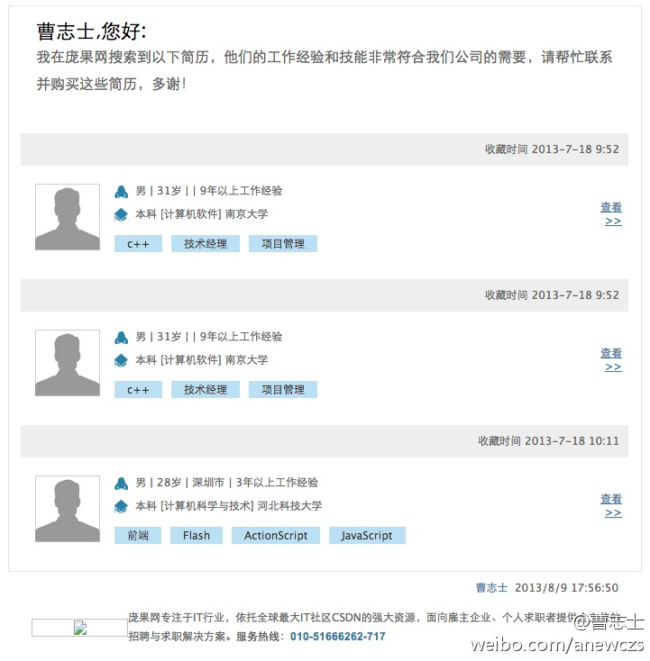

//@CTO俱乐部:此次CTO俱乐部深圳站“企业大数据建设案例分享”活动已成功举办，未能到现场的朋友可通过我们的活动回顾页面查看 活动报道、下载讲师PPT、查看视频 等信息了解活动详情，继续线上交流。网页链接@CTO俱乐部:#CTO俱乐部#本周六深圳企业大数据建设案例分享欢迎报名，邀请到@迅雷官方微博 基础研发数据中心技术总监@陈仕明_shangqiao ，@腾讯公司 数据中心数据挖掘研究员肖磊，以及桉树系统公司中国的认证讲师杨大江，分享各自的大数据实施案例。主持人@ShiningXYY ，@Ada李力 @CSDN云计算 网页链接
//@CTO俱乐部:俱乐部首期小型晚宴与王淮共进晚餐圆满结束，感谢十位会员的积极参与，活动报道及现场照片可通过以下链接了解，继续线上交流。@王淮Harry @互动阳光-安然 @王如章 @陶建辉快乐妈咪 @pku侯明强 @CSDN魏兵 @Ada李力 网页链接@CTO俱乐部:7月31日CTO俱乐部将在北京举办首期小型晚宴，特别邀请原Facebook第一位中国籍研发经理，《打造Facebook：亲历Facebook爆发的5年》一书的作者、天使投资人——王淮 与俱乐部会员共进晚餐，一起聊聊创业投资的相关话题。如果你想面对面的与王淮交流，欢迎报名参加网页链接
阿牛轰炸了这么多人？@曹志士:我正在@庞果网 使用#简历捕快#寻找IT互联网行业的精英人才，你也来试一试吧网页链接 @八爪李炯明 @蒋涛CSDN @孟迎霞 @Ada李力 @Justin麒麟 @_李宁_ @CSDN魏兵 @CSDN谭茂 @CSDN付江 @CSDN李涛 @王璋超 @哈燕楠--HR @CSDN武力 @CSDN包研 @CSDN周兆成 @iPrideRoCK @孟岩语怪力乱神 @欧阳璟V 

 网页链接
网页链接